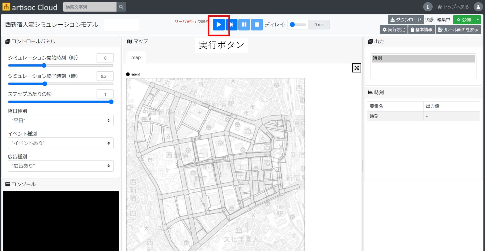
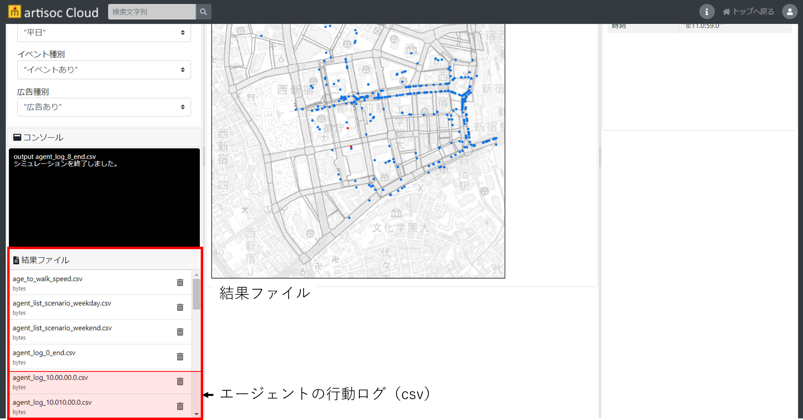
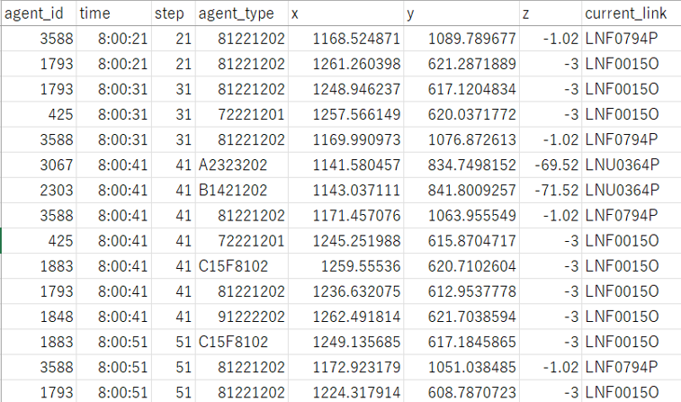

歩行シミュレーション実行
ここでは、歩行シミュレーションモデルを実行するための方法を記載します。
実行手順
シミュレーション実行条件を設定後、シミュレーション実行ボタンを押し、シミュレーションを実行します。 
シミュレーション実行完了後、エージェントの行動ログ（csvファイル）が取得できます。 
行動ログはシミュレーション時間で10分ごとに出力されます。
- csvファイル名は「agent_log_（時）.0（分）.00.0.csv」となります。
- （時）、（分）はログが出力される時間が記載されます。
- 例えば、8時10分までのログであれば、（時）= 8、（分）= 10 となります。
- 例えば、午前8時から午前9時までの実行とした場合、下記6ファイルが出力されます。
- agent_log_8.010.00.0.csv（8時～8時10分のログ）
- agent_log_8.020.00.0.csv（8時10分～8時20分のログ）
- agent_log_8.030.00.0.csv（8時20分～8時30分のログ）
- agent_log_8.040.00.0.csv（8時30分～8時40分のログ）
- agent_log_8.050.00.0.csv（8時40分～8時50分のログ）
- agent_log_9.000.00.0.csv（8時50分～9時のログ）
- 行動ログの内容は下記の通りです。
- agent_id：エージェントのID
- time：時刻
- step：シミュレーションステップ数
- agent_type：エージェントの属性を示す値
- x, y, z：エージェントの位置座標
- current_link：エージェントが存在するリンクのID 
- csvファイル名は「agent_log_（時）.0（分）.00.0.csv」となります。
なお、「結果ファイル」には他にもcsvデータが出力されますが、artisoc Cloudのシステム仕様により出力されるインプットデータや一時ファイルであるため、取得は不要です。